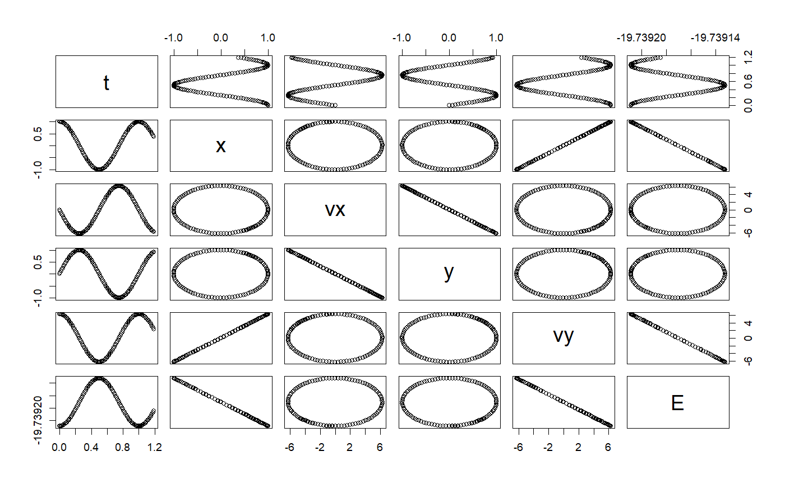

Verlet ODE solver class
Verlet ODE solver class
Verlet generic
Verlet class constructor ODE
Verlet(ode, ...) # S4 method for Verlet init(object, stepSize, ...) # S4 method for Verlet getRateCounter(object, ...) # S4 method for Verlet step(object, ...) # S4 method for ODE Verlet(ode, ...)
Arguments
| ode | an ODE object |
|---|---|
| ... | additional parameters |
| object | a class object |
| stepSize | size of the step |
Examples
# ++++++++++++++++++++++++++++++++++++++++++++++++++ example: KeplerEnergyApp.R # Demostration of the use of the Verlet ODE solver # importFromExamples("KeplerEnergy.R") # source the class Kepler KeplerEnergyApp <- function(verbose = FALSE) { # initial values x <- 1 vx <- 0 y <- 0 vy <- 2 * pi dt <- 0.01 tol <- 1e-3 particle <- KeplerEnergy() # Two ways of initializing the ODE object # particle <- init(particle, c(x, vx, y, vy, 0)) init(particle) <- c(x, vx, y, vy, 0) odeSolver <- Verlet(particle) # Two ways of initializing the solver # odeSolver <- init(odeSolver, dt) init(odeSolver) <- dt particle@odeSolver <- odeSolver initialEnergy <- getEnergy(particle) rowVector <- vector("list") i <- 1 while (getTime(particle) <= 1.20) { rowVector[[i]] <- list(t = getState(particle)[5], x = getState(particle)[1], vx = getState(particle)[2], y = getState(particle)[3], vy = getState(particle)[4], E = getEnergy(particle)) particle <- doStep(particle) energy <- getEnergy(particle) i <- i + 1 } DT <- data.table::rbindlist(rowVector) return(DT) } solution <- KeplerEnergyApp()#>#>plot(solution)# +++++++++++++++++++++++++++++++++++++++++++++++++++ application: Logistic.R # Simulates the logistic equation importFromExamples("Logistic.R") # Run the application LogisticApp <- function(verbose = FALSE) { x <- 0.1 vx <- 0 r <- 2 # Malthusian parameter (rate of maximum population growth) K <- 10.0 # carrying capacity of the environment dt <- 0.01; tol <- 1e-3; tmax <- 10 population <- Logistic() # create a Logistic ODE object # Two ways of initializing the object # population <- init(population, c(x, vx, 0), r, K) init(population) <- list(initState = c(x, vx, 0), r = r, K = K) odeSolver <- Verlet(population) # select the solver # Two ways of initializing the solver # odeSolver <- init(odeSolver, dt) init(odeSolver) <- dt population@odeSolver <- odeSolver # setSolver(population) <- odeSolver rowVector <- vector("list") i <- 1 while (getTime(population) <= tmax) { rowVector[[i]] <- list(t = getTime(population), s1 = getState(population)[1], s2 = getState(population)[2]) population <- doStep(population) i <- i + 1 } DT <- data.table::rbindlist(rowVector) return(DT) } # show solution solution <- LogisticApp()#>#>plot(solution)# ++++++++++++++++++++++++++++++++++++++++++++++++++ example: KeplerEnergyApp.R # Demostration of the use of the Verlet ODE solver # importFromExamples("KeplerEnergy.R") # source the class Kepler KeplerEnergyApp <- function(verbose = FALSE) { # initial values x <- 1 vx <- 0 y <- 0 vy <- 2 * pi dt <- 0.01 tol <- 1e-3 particle <- KeplerEnergy() # Two ways of initializing the ODE object # particle <- init(particle, c(x, vx, y, vy, 0)) init(particle) <- c(x, vx, y, vy, 0) odeSolver <- Verlet(particle) # Two ways of initializing the solver # odeSolver <- init(odeSolver, dt) init(odeSolver) <- dt particle@odeSolver <- odeSolver initialEnergy <- getEnergy(particle) rowVector <- vector("list") i <- 1 while (getTime(particle) <= 1.20) { rowVector[[i]] <- list(t = getState(particle)[5], x = getState(particle)[1], vx = getState(particle)[2], y = getState(particle)[3], vy = getState(particle)[4], E = getEnergy(particle)) particle <- doStep(particle) energy <- getEnergy(particle) i <- i + 1 } DT <- data.table::rbindlist(rowVector) return(DT) } solution <- KeplerEnergyApp()#>#>plot(solution)# +++++++++++++++++++++++++++++++++++++++++++++++++++ application: Logistic.R # Simulates the logistic equation importFromExamples("Logistic.R") # Run the application LogisticApp <- function(verbose = FALSE) { x <- 0.1 vx <- 0 r <- 2 # Malthusian parameter (rate of maximum population growth) K <- 10.0 # carrying capacity of the environment dt <- 0.01; tol <- 1e-3; tmax <- 10 population <- Logistic() # create a Logistic ODE object # Two ways of initializing the object # population <- init(population, c(x, vx, 0), r, K) init(population) <- list(initState = c(x, vx, 0), r = r, K = K) odeSolver <- Verlet(population) # select the solver # Two ways of initializing the solver # odeSolver <- init(odeSolver, dt) init(odeSolver) <- dt population@odeSolver <- odeSolver # setSolver(population) <- odeSolver rowVector <- vector("list") i <- 1 while (getTime(population) <= tmax) { rowVector[[i]] <- list(t = getTime(population), s1 = getState(population)[1], s2 = getState(population)[2]) population <- doStep(population) i <- i + 1 } DT <- data.table::rbindlist(rowVector) return(DT) } # show solution solution <- LogisticApp()#>#>plot(solution)